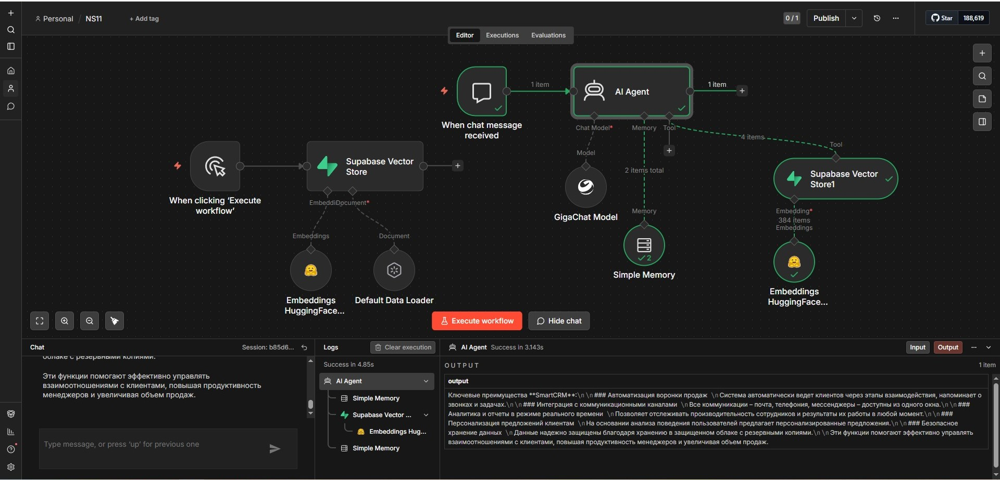

🎯 Бизнес-проблема
Команда продаж тратила 30–40 минут в день на поиск информации в разрозненных источниках (Google Docs, Notion, PDF). Онбординг нового менеджера занимал до 2 недель.
- Менеджеры забывали нюансы скриптов → теряли сделки
- База знаний устаревала — не было единого источника правды
- Классический FAQ-бот не справлялся с контекстными вопросами
✅ Цель решения
Собрать production-ready RAG-конвейер, который:
- Индексирует документы в векторную БД с чанкингом
- Отвечает на вопросы, подтягивая релевантные фрагменты
- Фильтрует ответы по метаданным (отдел, тема, версия)
- Работает на собственной инфраструктуре — данные не покидают периметр
⚙️ Архитектура
[Документы] → n8n (loader) → Text Splitter (1000/200)
→ HuggingFace Embeddings (384 dim)
→ Supabase + pgvector (upsert)
→ n8n (retrieval) → GigaChat → Ответ + источник

Инфраструктура: VPS 7 ГБ RAM, Docker + Dokploy, домен supabase.eduardwit.ru с авто-SSL, пересозданные JWT-ключи.
📊 Результат
−70%
Время онбординга
−85%
Поиск информации
~40 ч/мес
Экономия на команду
2.1 сек
Среднее время ответа
При стоимости часа менеджера 800 ₽ экономия только на поиске = ~32 000 ₽/мес на команду из 7 человек.
💡 Ценность для бизнеса
- Сокращение затрат на онбординг: новые сотрудники выходят на план за 3–4 дня вместо 2 недель
- Рост конверсии: менеджеры отвечают строго по скриптам компании
- Сохранение экспертизы: знания остаются в векторной БД, даже если сотрудник уволился
- Информационная безопасность: self-hosted, данные не уходят в публичные облака
- Независимость от вендоров: любой компонент можно заменить без переписывания системы
🌍 Где ещё работает
- Юридические отделы — поиск по договорам и судебной практике
- Техподдержка (L1/L2) — бот первой линии с эскалацией
- HR / онбординг — ИИ-наставник с адаптацией под роль
- E-commerce — ассистент менеджеров на маркетплейсах
- EdTech — ИИ-тьютор на базе учебных материалов